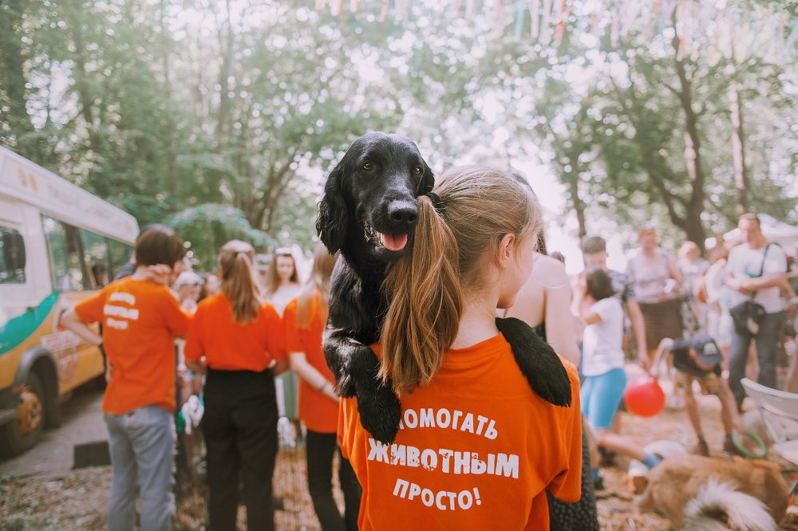

Хвостатые звёзды: репортаж о приюте показали по телевизору
28.03.2026

В субботу вечером на канале «ТВ-Центр» вышел сюжет о приюте «Вторая жизнь». Журналисты провели у нас
целый день: снимали, как волонтёры кормят животных, гуляют с собаками и ухаживают за кошками, а также
взяли интервью у нашего координатора Анны.
«Мы хотим показать, что приют - это не место, где животные страдают. Это место, где им помогают,
лечат, любят и каждый день ищут дом», - рассказала Анна в прямом эфире.
В сюжет попали несколько подопечных, которые особенно ждут хозяев: пёс Рекс, живущий в приюте третий месяц,
и кошка Марфа, которая очень любит сидеть на руках. После выхода программы нам поступило 12 звонков от желающих
познакомиться с животными и три заявки на волонтёрство.
Репортаж уже доступен на сайте телеканала. Спасибо съёмочной группе за тёплый и частный рассказ о нашей работе.
Возможно, после эфира у кого-то из зрителей появится новый член семьи - а мы всегда готовы помочь с выбором.